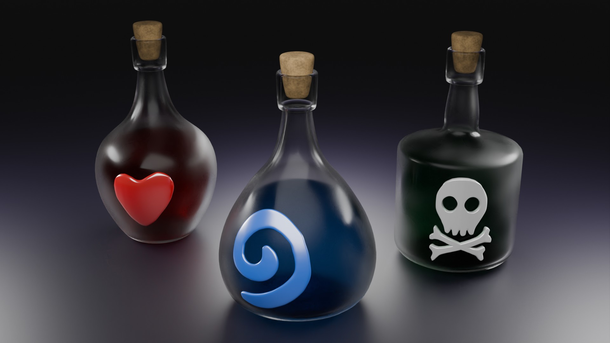
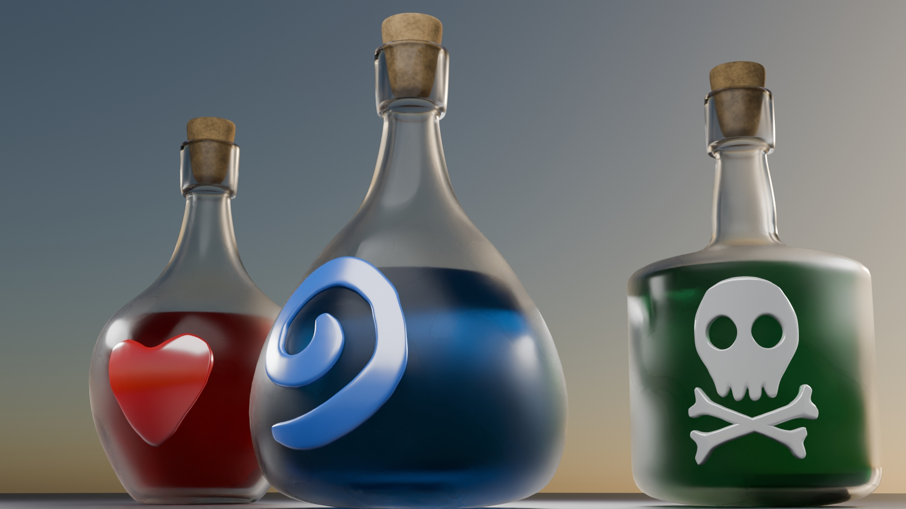
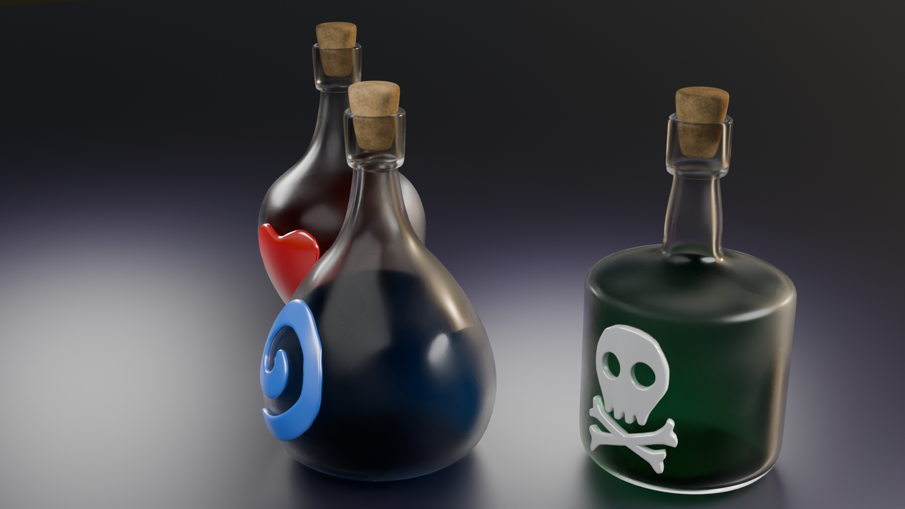

Общий вид, хорошо видна форма.
Форма создавалась как фигура вращения

Ракурс, хорошо показывающий освещение.
При работе с прозрачными или отражающими объектами важно правильно настроить освещение и блики

Ракурс "на просвет", по очереди.
Как можно увидеть, бутылки достаточно прозрачны чтобы их было видно и не достаточно, чтобы сливаться
"Пузырьки" — проект, демонстрирующий процедурное моделирование бутылок с различной стилистикой. Каждая форма и текстура создавались автоматически, что делает проект идеальным примером процедурного дизайна. Наслаждайтесь 3D-просмотром!
0 отметок